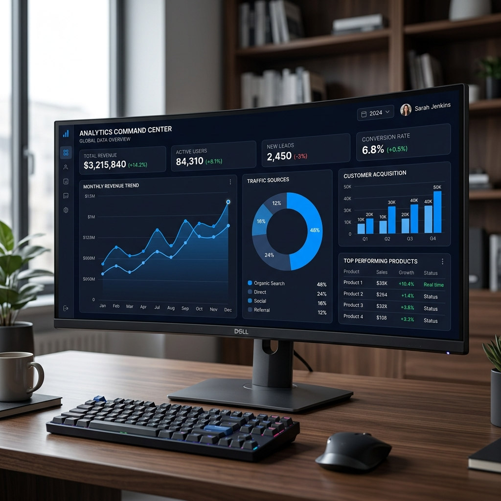
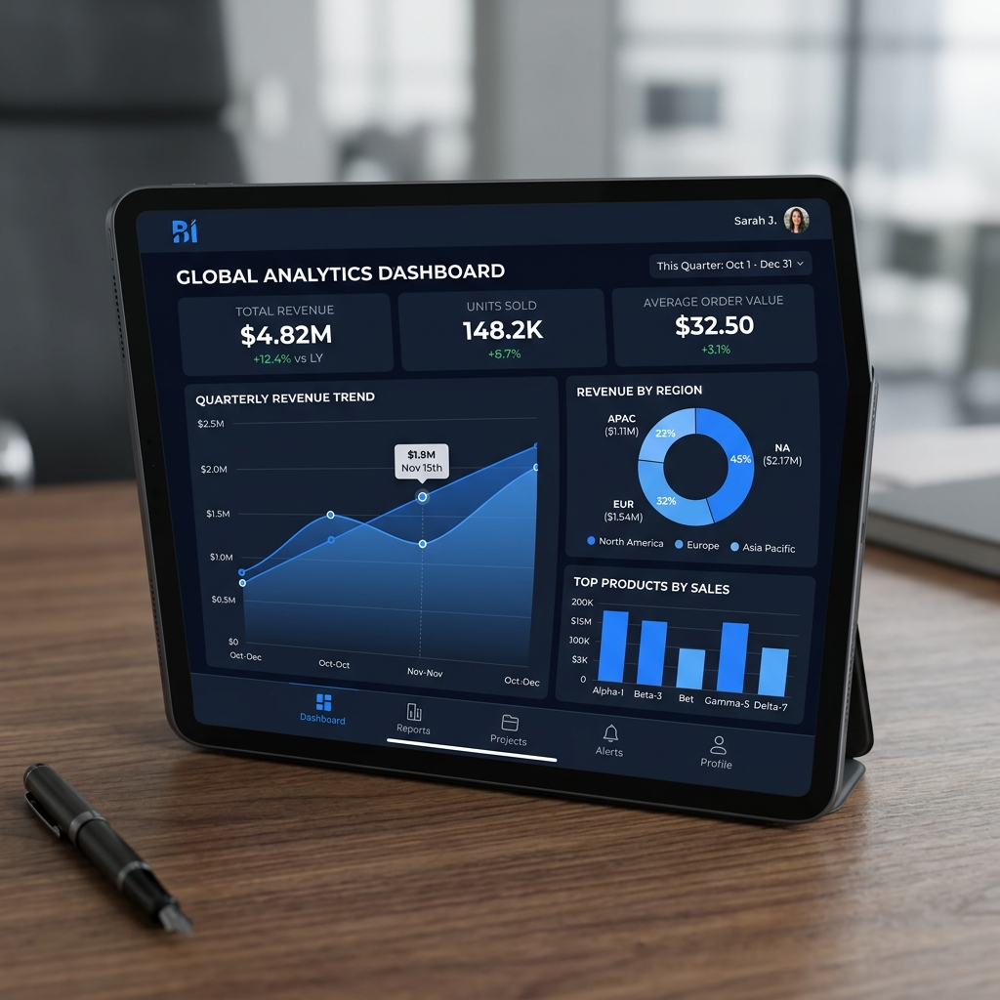

Mahasiswa Bisnis Digital dengan fokus mendalam pada Analisis Data, Visualisasi, dan Pengembangan Dashboard. Mengubah data kompleks menjadi narasi bisnis yang dapat ditindaklanjuti.
Fokus pada analisis dan visualisasi data untuk menghasilkan wawasan strategis.
Saya berdedikasi untuk memproses data transaksi dan operasional guna menggali wawasan bisnis yang berharga. Pengalaman saya mencakup siklus hidup data penuh: mulai dari pembersihan data mentah hingga perancangan dashboard interaktif yang memfasilitasi pengambilan keputusan strategis.
S1 Bisnis Digital

Tujuan: Menganalisis performa penjualan dan profit untuk mengetahui produk paling menguntungkan serta tren bisnis.
Proses: Data cleaning, transformation, and metrics calculation (Revenue, Profit, Margin, ASP, Profit per Unit).
Insight Utama: Profit margin 48,9%, ASP stabil Rp22.576, identifikasi perbedaan revenue vs profit antar produk.
Impact: Membantu strategi produk menguntungkan dan evaluasi tren penurunan.
Tujuan: Menganalisis data produksi dan penjualan untuk meningkatkan efisiensi operasional.
Proses: Pengolahan data produksi, cleaning, dan pembuatan dashboard penjualan & produksi.
Insight Utama: Ketidakseimbangan produksi vs penjualan, identifikasi selisih stok (overstock/understock), pola produksi tidak konsisten.
Impact: Evaluasi efisiensi produksi dan perencanaan stok lebih akurat.

Data Transaksi Diolah
Metrik Bisnis Utama
Dashboard Interaktif
Mengelola perbendaharaan organisasi, melakukan pencatatan transaksi keuangan secara detail, dan menyusun laporan keuangan berkala yang akurat untuk transparansi dana kegiatan.
Tertarik mendiskusikan data, peluang proyek, atau peran analitik? Jangan ragu untuk menghubungi saya melalui kontak di bawah ini.